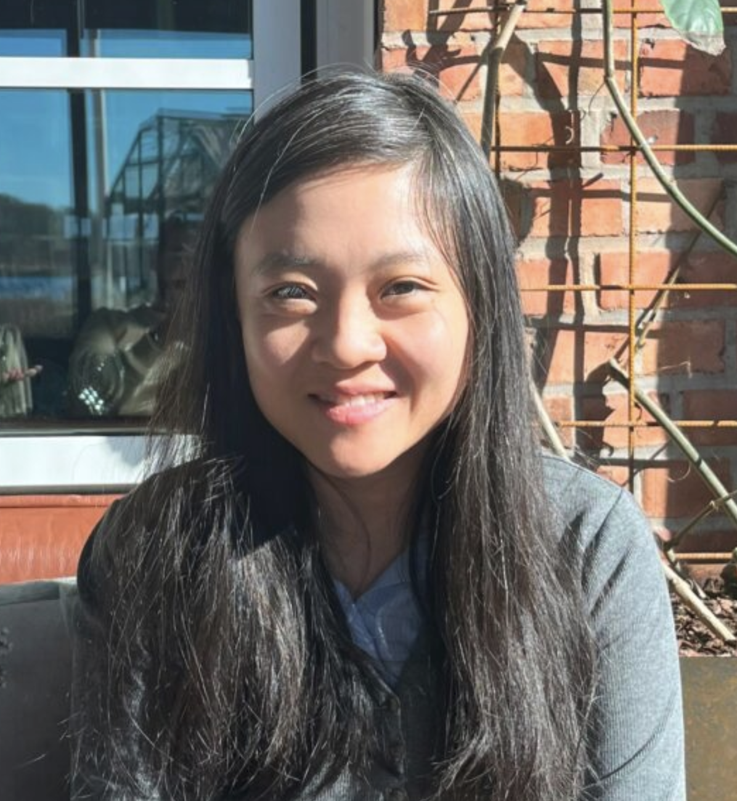

I am an Assistant Professor in Computer Science and Engineering at Chalmers University of Technology and a Technical Fellow (Research Leader) at the Center for Digital Health, Sahlgrenska University Hospital. I lead AIXLab@Chalmers, a research lab that develops and validates ML/AI solutions on real-world problems. I am also a co-founder of Asymptotic AI (consultancy for AI projects) and Lumilogic AB (sustainable finance and sustainability reporting services).
My research focuses on building AI systems that integrate domain knowledge and are usable in practice. I work across domains including healthcare, automotive, finance, transport, and sustainable construction.
I am looking for students who are curious, enjoy working with code and data, and care more about aligning their mental models with facts than about "being right". I value people who are driven to deliver results and who treat others with equal respect. If that sounds like you, I would love to hear from you.
I am hands-on and passionate about solving real problems. I value direct and clear communication. I care about inclusivity and equity. I like to challenge assumptions and test ideas on real data rather than stick with convention. I prefer straightforward collaboration where we set concrete goals and support each other along the way. If that resonates with you, I am always open to new collaborations.